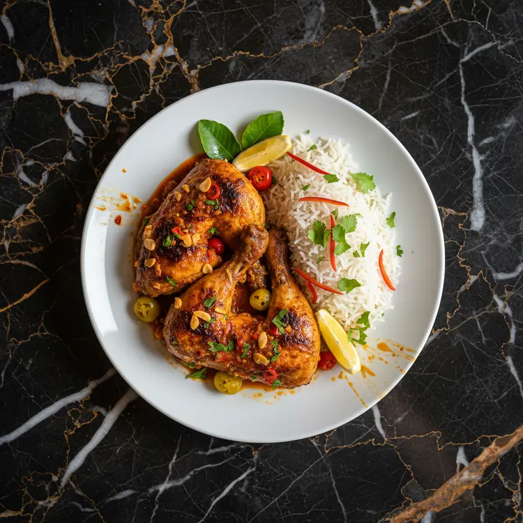

Prato principal
Cafriela
Frango grelhado com limão, alho, cebola, especiarias e piri-piri. Chega com arroz e batata frita.
12,50 €
Ver na ementa
Cheiro de caldo ao lume, frango a chiar na grelha e uma sala onde se come devagar e se fica mais um bocadinho.
Ver ementa

Prato principal
Frango grelhado com limão, alho, cebola, especiarias e piri-piri. Chega com arroz e batata frita.

Prato principal
Galinha estufada em óleo de palma, com cebola e tomate. Come-se com arroz branco.
Entrada
Legumes da época cozidos devagar, com um fio de óleo e um toque de piri-piri. Quentinha e leve, para começar bem.
Prato do dia
Amendoim moído devagar, com carne e um fio de piri-piri. É o prato que mais saudades mata.
11,50 €
Horário